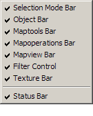

The View Menu
The purpose of the functions in this menu is to control what does and doesn't appear in the Hammer Editor's 3D and 2D views. For more ways to customize the appearance of Hammer, refer to the sections on the General Options, 3D View Options, and 2D Views Options.

Screen Elements
This sub-menu gives you control over which toolbars and other elements are displayed on your Hammer desktop. Select and item to remove it from the display. Selecting it again will display the item again.

2D Window Options
The Hammer working area is divided into four separate panes. Three of these are used to show the 2D views. The forth window contains a single 3D view.
The items 2D XY, 2D YZ, and 2D XZ are three commands to select which 2D view is displayed in which window. Click in a 2D window pane to select it, then choose one of the three options to choose which 2D direction is displayed in that window. The default window settings have one window from each direction.
Tip: XY is the top-down view. YZ views from the side. XZ is the front.
3D Window Options
There are three 3D view options available – Wireframe, Filled Polygons, and Textured Polygons. These options control which 3D mode is used when the 3d preview window is shown.
Here is a cube drawn in each of the 3d modes:

Autosize 4 views Shortcut: CTRL+A
This will divide the available desktop space into four equal portions for the 3D view and three 2D windows.
Center Views on Selection Shortcut: CTRL+E
Choosing this function will center all of the 2D views on the center of the currently selected object(s).
Center 3D Views on Selection Shortcut: CTRL+SHIFT+E
Choosing this function will center the 3D view on the center of the currently selected object(s).
Go to Coordinates...
Centers the viewports on the coordinates typed into the Go to Coordinates dialog box after pressing OK.
Go to Brush Number...
Centers the viewports on the brush number typed into the Go to Brush Number dialog box after pressing OK.
Show Connections
Selecting this option will toggle on and off visible connection between entities that are linked by target and targetname values.

Show Connections
Selecting this option will toggle on and off visible connection between entities that are linked by target and targetname values.
Show Helpers
Turns on and off the display of entity helpers for entities that have them. Example include the light cones on point_spotlight, or the fade distances on prop_static. See the Entity Guide for more information about specific entities.
Hide Items
Selecting Hide Items hides all point entities from view and, when selected again, returns the entities to view.
Hide Paths
This will toggle on and off the visibility of paths lines between path entities such as path_corner and path_track.
Hide Entity Names
Turns on and off the display of entity names for all entities in the 2D Views.
Hide selected objects
This command hides the selected objects invisible by placing the objects into a new VisGroup. Upon activating the command, it will bring up the New VisGroup dialog to define the new VisGroup containing the selected objects. After creating the VisGroup, it will be immediately hidden.
For more information on using VisGroups, see Grouping and Visgrouping, New VisGroup, and Filter Control Bar.
Show hidden objects
This function makes all hidden VisGroups visible.
Draw Materials Opaque
Disables transparent rendering of all materials in the 3D Views. Can be useful to select and sort objects in the scene, and improve rendering speed of complex scenes on lower-end systems.
© 2004 Valve Corporation. All rights reserved. Valve, the Valve logo, Half-Life, the Half-Life logo, the Lambda logo, Steam, the Steam logo, Team Fortress, the Team Fortress logo, Opposing Force, Day of Defeat, the Day of Defeat logo, Counter-Strike, the Counter-Strike logo, Source, the Source logo, Hammer and Counter-Strike: Condition Zero are trademarks and/or registered trademarks of Valve Corporation. Microsoft and Visual Studio are trademarks and/or registered trademarks of Microsoft Corporation. All other trademarks are property of their respective owners.